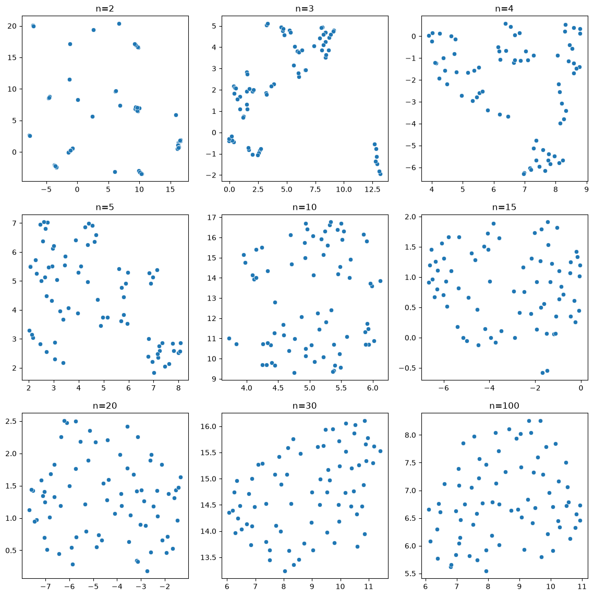
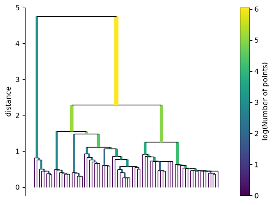
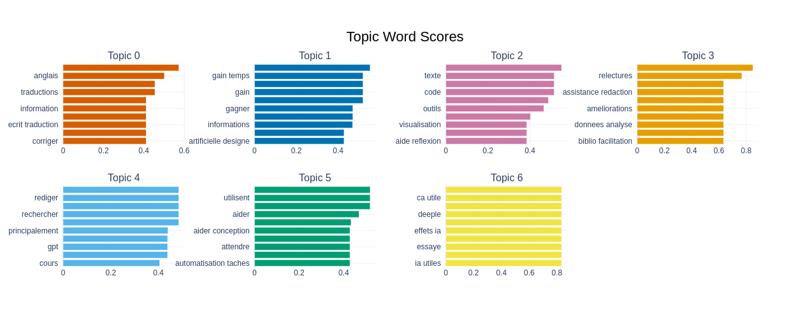
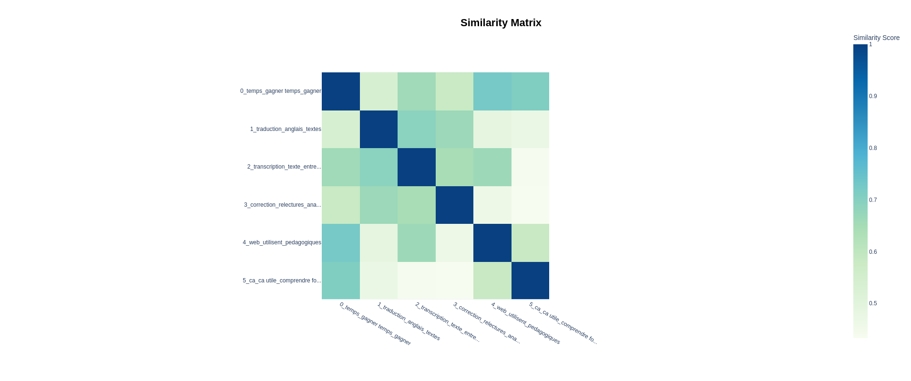
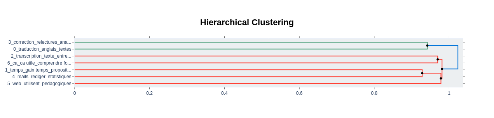

Les raisons d’utiliser l’IA#
Dans ce notebook, nous utilisons l’algorithme Bertopic pour identifier les “raisons” présentées par les enquêtées pour expliquer leur usage de l’IA.
!python -m spacy download fr_core_news_md
Collecting fr-core-news-md==3.8.0
Downloading fr_core_news_md-3.8.0-py3-none-any.whl (45.8 MB)
?25l ━━━━━━━━━━━━━━━━━━━━━━━━━━━━━━━━━━━━━━━━ 0.0/45.8 MB ? eta -:--:--
━━━━━━━━━━━━━━━━━╸━━━━━━━━━━━━━━━━━━━━━ 20.7/45.8 MB 116.3 MB/s eta 0:00:01
━━━━━━━━━━━━━━━━━━━━━━━━━━━━━━━━━━━━━╺━ 43.8/45.8 MB 113.8 MB/s eta 0:00:01
━━━━━━━━━━━━━━━━━━━━━━━━━━━━━━━━━━━━━━━━ 45.8/45.8 MB 99.8 MB/s 0:00:00
?25h
✔ Download and installation successful
You can now load the package via spacy.load('fr_core_news_md')
import spacy
import re
import bertopic
import nltk
from nltk.corpus import stopwords
nlp = spacy.load('fr_core_news_md')
nlp.add_pipe("merge_entities")
#nlp.add_pipe("merge_noun_chunks")
spacy_stopwords = list(nlp.Defaults.stop_words)
nltk.download('stopwords')
spacy_stopwords
stop_words = set(stopwords.words('french'))
[nltk_data] Downloading package stopwords to /home/onyxia/nltk_data...
[nltk_data] Unzipping corpora/stopwords.zip.
#
pos=['VERB','ADJ','ADV']
df_ia = df0[["q45_clé","q35_ia_tools","q37_raison_util_ia"]].loc[~df0.q37_raison_util_ia.isna()]
dict_sent = {}
for n, x in enumerate(df_ia.q35_ia_tools):
doc = nlp(x)
if len([t.text.lower() for t in doc if t.pos_ in pos]) >=2:
print(x)
id_user = df_ia.q45_clé.iloc[n]
dict_sent[id_user] = x
Intelligence Artificielle désigne de nombreuses technologies. Je n'utilise pas d'outils génératifs mais je travaille avec et développe des outils de transcription, d'analyse de texte et de la parole, d'analyse d'image. Il s'agit de logiciels qui tournent en local sur mon matériel.
DeepL - objection de conscience par rapport à l'IA générative
NoScribe en local pour des transcriptions d'entretiens + deepl pour des traductions courtes et ponctuelles.
Deep L, Coco SSD dans le cadre d'un projet de recherche, parfois Chat GPT pour tester les éventuels usages dans des travaux des étudiant.es
très peu ; chat GPT mais je l'utilise très peu car ce n'est pas un compte pro; je préfère attendre que l'on ait des recommandations en terme d'utilisation de l'IA par l'université, avec peut être un compte pro pour protéger le contenu dépose ; j'utilise par contre deep pour une aide à la traduction
Je participe à deux projets de recherche qui utilisent ce type d'outil
dict_new_sent = {}
for n, x in enumerate(df_ia.q37_raison_util_ia):
id_user= df_ia.q45_clé.iloc[n]
if id_user in dict_sent.keys():
new_sent = ". ".join([dict_sent[id_user], x])
else:
new_sent = x
dict_new_sent[id_user]= new_sent
dict_new_sent
{'FCCB-GMYA': 'Pédagogie, Recherche (biblio)',
'CV3G-95CT': "relecture de l'anglais principalement",
'M5L8-UM9F': 'aide ponctuelle formulation de traduction, aide ponctuelle réponses à des questions méthodologiques complexes',
'9K9T-RVNL': 'Principalement pour alléger ma charge de travail : rechercher des informations méthodologique ou statistiques, relire ma production en anglais, améliorer des formulations, rédiger des mails de réponse, rédiger des post professionnels pour les réseaux sociaux, etc.',
'CN6B-UEHQ': "Intelligence Artificielle désigne de nombreuses technologies. Je n'utilise pas d'outils génératifs mais je travaille avec et développe des outils de transcription, d'analyse de texte et de la parole, d'analyse d'image. Il s'agit de logiciels qui tournent en local sur mon matériel.. Il s'agit de mon cœur de recherche. ",
'5G5M-BM3L': 'pour rester au courant des progrès et fonctionnalités',
'BKF8-SNEZ': 'Automatisation de tâches réccurentes, créations de site web pour des supports pédagogiques personnalisés en ligne.',
'YTMC-B4DP': "transciption d'entretien",
'Q5AZ-855W': "analyse d'entretiens, recherche dans de multiples entretiens",
'ZGPH-2FPH': 'ça aide',
'TZYG-EKYM': "DeepL - objection de conscience par rapport à l'IA générative. pratique",
'LPNF-H5YQ': 'reformulation, recherche ',
'MXD6-JC3F': 'pour des traductions, pour résumer des textes lus',
'SKD4-XJMH': 'Automatisation de code, recherche méthodologique, copy-editing',
'YL4Q-KQAK': "Recherche d'information administrative, révision de texte en langue étrangère, recherche bibliographique exploratoire",
'5FJS-YCLW': "NoScribe en local pour des transcriptions d'entretiens + deepl pour des traductions courtes et ponctuelles.. NoScibe fait ganer un peu de temps, Deeple pallie en partie mes lacunes... Pour les traductions longues je fais appel à des professionnel·les.",
'GK5N-J3SV': "Deep L, Coco SSD dans le cadre d'un projet de recherche, parfois Chat GPT pour tester les éventuels usages dans des travaux des étudiant.es. Traduction, recherche, contrôle",
'RVX8-7FSV': 'Pour de la recherche de documents ou de processus',
'EM6U-9PNF': "Pour m'aider à la conception d'exercices en cours, pour m'aider à faire des recherches web sur des sujets précis",
'E3YL-PHZV': 'formidable gain de temps pour de nombreuses dimensions du travail universitaire',
'35EN-C9DW': 'Traduction',
'ET2V-ZA9Z': 'traduction de certains termes scientifiques, rédaction de résumé ',
'ANM4-SD9B': 'Facilitation et correction ',
'A33H-5ZS7': 'Principalement pour gagner du temps sur des tâches administratives (écriture de mails, certaines parties des dossiers AAP), parfois pour reformulerou générer des données fictives pour mes cours (cours de statistiques), rarement pour rechercher de la littérature scientifique',
'4VJV-R74Q': 'Traduction ; retranscription entretiens',
'RAUZ-BRFQ': "M'aider à écrire du code de traitement de donnée principalement. Parfois à corriger les formulations de mes écrits",
'QH7Q-PJZ9': 'Correction orthographique/reformulation/epicenisation',
'VR4Q-ZFTH': 'traitement de données, sourcing',
'QVLJ-HWKA': "J'essaye de comprendre comment ils fonctionnent",
'CALH-8CSE': 'Relectures, améliorations du manuscrit',
'8NR6-Q3ED': 'Pour gagner du temps, synthétiser principalement',
'Y7ZW-AP6B': "très peu ; chat GPT mais je l'utilise très peu car ce n'est pas un compte pro; je préfère attendre que l'on ait des recommandations en terme d'utilisation de l'IA par l'université, avec peut être un compte pro pour protéger le contenu dépose ; j'utilise par contre deep pour une aide à la traduction. deepL pour la traduction ; chat GPT ponctuellement pour des questions générales",
'XW7R-FDND': "Style/syntaxe à l'écrit, traduction anglais/français, recherche de références dans la littérature, assistance pour mise en page (bibliographie)",
'Q3YA-587D': 'Evaluation des propositions de ces IA',
'9X9M-JRJW': 'Traduction en anglais, synthèse de textes, rédaction en anglais, recherche de références ',
'PQML-4NVQ': 'correction',
'H5X6-KL2Z': 'Relecture, correction, extraction de données, analyse de documents',
'4FYP-H9TX': 'Synthèse de texte (ChatGPT), analyse et visualisation des données (Claude)',
'7L5G-35JG': "pour gagner du temps dans la recherche d'informations ; pour des propositions de plans",
'FDGG-VDE6': 'Pratique',
'6454-S2QM': 'travail données',
'D4JC-WN3B': 'parceque je travaille sur les effets de IA ',
'JF4U-H3UM': 'Traduction',
'NLVG-2YZ5': "principalement pour des aides à la programmation qui n'est pas mon coeur de métier - cela me permet de débugger rapidement un programme",
'WYVU-F8DF': "Recherche complémentaire d'informations, sourcing, appui méthodologique",
'3LVR-PYLH': 'gain de temps et de coût ',
'VQH6-7NJP': 'Comprendre et anticiper la façon dont les étudiants les utilisent',
'G35P-HV8F': 'organisation: décomposition des tâches et des instructions; elicit pour la bibliographie',
'3EAA-2Q9U': "Enseignement: Structuration de cours, élaboration de syllabus, idées d'activités pédagogiques; Recherche: aide à la reformulation d'idées",
'2DRU-P3AV': 'Ils sont utiles',
'3V5K-8FEA': 'Pour gagner du temps sur des procédures routinières ou pour formaliser des courriels ou autres plus rapidement',
'L755-EYSR': "Recherche sur les interactions Humain-IA, selon l'expertise.",
'FRLS-PTRU': 'Ca peut être utile !',
'7CU7-JG8K': "transcription, résumés d'articles, aide technique, transcription",
'BNVM-K8M9': 'reformulaiton de texte et generation de code ',
'78P8-N4BA': 'Assistance à la rédaction, revue de littérature',
'QAMR-B8EH': "Je participe à deux projets de recherche qui utilisent ce type d'outil. Reconnaissance automatique de caractères",
'2Y89-7BR9': "je les teste pour les divers usages de mon travail : recherche d'information, rédaction, traduction.",
'A7R6-3SWC': "pour relire et corriger l'anglais. pour organiser des données verbales en catégories, ",
'2JQN-P9PA': 'Accès via CNRS ',
'82N2-HDNU': "Faire des calculs, une recherche rapide, vérifiez la qualité rédactionelle d'un texte... ",
'X48K-M3K4': "Transcription d'entretien, aide à la rédaction, aide à la réflexion, recherche documentaire...",
'RZY3-LPES': 'Gagner du temps +++',
'Q934-QKAW': "traduction, amélioration de l'écriture, reformulation, organisation et planification. ",
'HKN6-95PQ': 'Beaucoup plus rapide et plus précise que Scopus, mais trop cher',
'5V62-N439': 'traduction',
'WAR9-LFJP': "Revision de l'anglais écrit/traduction et analyse de certains textes ",
'32TW-JLY5': "Fautes d'orthographe non vues lors des relectures"}
Preprocess text#
df_ia["text"]=df_ia.q45_clé.map(dict_new_sent.get)
df_ia = df_ia.loc[~df_ia.text.str.lower().str.contains("cnrs")] #on enlève cette réponse qui crée du bruit
df_ia["clean_text"] = df_ia.apply(lambda row: str(row.text).lower().strip(), 1) # lower sentence
df_ia["clean_text"] = df_ia.apply(lambda row: re.sub(r"\w'", "", str(row.clean_text)), 1) #replace "\w’" by ""
df_ia["clean_text"] = df_ia.apply(lambda row: re.sub(r"\/", " ", str(row.clean_text)), 1) #replace "/" by " "
df_ia["clean_text"] = df_ia.apply(lambda row: re.sub(r"\(|\)", "", str(row.clean_text)), 1) #replace "/" by " "
df_ia["clean_text"] = df_ia.apply(lambda row: re.sub(r"\+", ".", str(row.clean_text)), 1) #replace "/" by " "
df_ia["clean_text"] = df_ia.apply(lambda row: re.sub(r"œ", "oe", str(row.clean_text)), 1) #replace "/" by " "
df_ia["clean_text"] = df_ia.apply(lambda row: re.sub(r"ganer", "gagner", str(row.clean_text)), 1) #replace "/" by " "
df_ia["clean_text"] = df_ia.apply(lambda row: re.sub(r"noscibe", "noscribe", str(row.clean_text)), 1) #replace "/" by " "
df_ia["split_text"] = df_ia.clean_text.str.split(".")
######### Explode
df_ia1 = df_ia.explode("split_text")
df_ia1 = df_ia1.loc[df_ia1.split_text.str.len()>2]
df_ia1["split_text"] = df_ia1.split_text.str.split(";")
######### Explode
df_ia1 = df_ia1.explode("split_text")
df_ia1 = df_ia1.loc[df_ia1.split_text.str.len()>2]
df_ia1["split_text"] = df_ia1.apply(lambda row: " ".join(re.sub("[^'a-zA-Zàâäéèêëïîôöùûüÿçß]+", " ", row.split_text).split()), 1) #remove hashtag, arobase, HTML character
df_ia1["tokens"] = df_ia1.apply(lambda row: row.split_text.split(),1)
for x in df_ia1.split_text:
if ";" in x:
print(x)
df_ia1["len_txt"] = df_ia1.tokens.str.len()
df_ia1 = df_ia1.loc[df_ia1.tokens.str.len()>2].reset_index()
print(f"Il y a {len(df_ia1)} phrases. Le plus long fait {max(df_ia1.len_txt)} caractères.")
Il y a 74 phrases. Le plus long fait 37 caractères.
df_ia1["text_id"] = "id_" + df_ia1.index.astype(str) # on crée un id qu'on réutilisera plus bas
df_ia1
texts = [text for text in df_ia1.split_text] #liste des textes nettoyés
texts_id = [id_text for id_text in df_ia1.text_id]
df_ia1
| index | q45_clé | q35_ia_tools | q37_raison_util_ia | text | clean_text | split_text | tokens | len_txt | text_id | |
|---|---|---|---|---|---|---|---|---|---|---|
| 0 | 2 | FCCB-GMYA | Chat GPT, Mistral IA, LM Notebook | Pédagogie, Recherche (biblio) | Pédagogie, Recherche (biblio) | pédagogie, recherche biblio | pédagogie recherche biblio | [pédagogie, recherche, biblio] | 3 | id_0 |
| 1 | 3 | CV3G-95CT | chatgpt, euria | relecture de l'anglais principalement | relecture de l'anglais principalement | relecture de anglais principalement | relecture de anglais principalement | [relecture, de, anglais, principalement] | 4 | id_1 |
| 2 | 4 | M5L8-UM9F | Chat-GPT, Perplexity | aide ponctuelle formulation de traduction, aid... | aide ponctuelle formulation de traduction, aid... | aide ponctuelle formulation de traduction, aid... | aide ponctuelle formulation de traduction aide... | [aide, ponctuelle, formulation, de, traduction... | 13 | id_2 |
| 3 | 8 | 9K9T-RVNL | le chat ; chatgpt | Principalement pour alléger ma charge de trava... | Principalement pour alléger ma charge de trava... | principalement pour alléger ma charge de trava... | principalement pour alléger ma charge de trava... | [principalement, pour, alléger, ma, charge, de... | 35 | id_3 |
| 4 | 9 | CN6B-UEHQ | Intelligence Artificielle désigne de nombreuse... | Il s'agit de mon cœur de recherche. | Intelligence Artificielle désigne de nombreuse... | intelligence artificielle désigne de nombreuse... | intelligence artificielle désigne de nombreuse... | [intelligence, artificielle, désigne, de, nomb... | 6 | id_4 |
| ... | ... | ... | ... | ... | ... | ... | ... | ... | ... | ... |
| 69 | 109 | RZY3-LPES | Chat GPT, IA associée aux App (dont Apple IA) | Gagner du temps +++ | Gagner du temps +++ | gagner du temps ... | gagner du temps | [gagner, du, temps] | 3 | id_69 |
| 70 | 111 | Q934-QKAW | Chat GPT ; Claude | traduction, amélioration de l'écriture, reform... | traduction, amélioration de l'écriture, reform... | traduction, amélioration de écriture, reformul... | traduction amélioration de écriture reformulat... | [traduction, amélioration, de, écriture, refor... | 8 | id_70 |
| 71 | 112 | HKN6-95PQ | Elicit | Beaucoup plus rapide et plus précise que Scopu... | Beaucoup plus rapide et plus précise que Scopu... | beaucoup plus rapide et plus précise que scopu... | beaucoup plus rapide et plus précise que scopu... | [beaucoup, plus, rapide, et, plus, précise, qu... | 11 | id_71 |
| 72 | 115 | WAR9-LFJP | Claude, ChatGPT | Revision de l'anglais écrit/traduction et anal... | Revision de l'anglais écrit/traduction et anal... | revision de anglais écrit traduction et analys... | revision de anglais écrit traduction et analys... | [revision, de, anglais, écrit, traduction, et,... | 10 | id_72 |
| 73 | 117 | 32TW-JLY5 | Correcteurs d'orthographe | Fautes d'orthographe non vues lors des relectures | Fautes d'orthographe non vues lors des relectures | fautes orthographe non vues lors des relectures | fautes orthographe non vues lors des relectures | [fautes, orthographe, non, vues, lors, des, re... | 7 | id_73 |
74 rows × 10 columns
Décomposition de l’algorithme Bertopic#
BERTopic est composé de quatre “étapes” :
Le plongement dans un embedding des phrases du corpus à l’aide d’un modèle sentence transformers
La réduction de la dimensionalité de l’embedding
L’extraction de clusters
La labellisation des clusters en utilisant c-TF-IDF
Le point essentiel à retenir est que chacune des fonctions utilisées pour réaliser ces 4 étapes possèdent des paramètres dont la définition joue ensuite sur le résultat final.
from sentence_transformers import SentenceTransformer
import pickle
La librairie sentence_transformers permet d’accéder facilement aux modèles hébergés sur huggingface.
pickle servira à enregistrer l’embedding pour une réutilisation ultérieure.
Une fois le modèle chargé, il peut être utile de vérifier que la taille maximale de la séquence admise par le modèle est égale ou supérieure à la taille du texte le plus long du corpus. Dans le cas contraire, les textes trop longs seront tronqués.
Le modèle que nous utilisons est ‘paraphrase-multilingual-MiniLM-L12-v2’. La taille maximale de la séquence est 128, or le commentaire le plus long est 63 mots.
model = SentenceTransformer('paraphrase-multilingual-MiniLM-L12-v2')
print("Taille maximale de la séquence : ", model.get_max_seq_length())
print(model.get_max_seq_length()>= max(df_ia1.len_txt))
Taille maximale de la séquence : 128
True
embeddings = model.encode(texts, show_progress_bar=True, batch_size=32)
Réduction des dimensions avec UMAP#
Une fois l’embedding réalisée, BERTopic fait appel à UMAP (Uniform Manifold Approximation and Projection) pour réduire le nombre de dimensions – qui est au départ de 384.
UMAP est un algorithme qui cherche à préserver la structure locale (relation entre points proches) et la structure globale des données.
Le nombre de voisins : n_neighbors.
La balance entre la préservation des structures locales et globales est d’abord déterminée par le nombre de voisins (n_neighbors) de chaque point que l’algorithme prend en compte. Plus le n_neighbors est petit, plus UMAP préservera la structure locale des données. Inversement, plus n_neighbors est grand, plus UMAP rendra visible la structure globale au détriment des spécifités locales.
Pour saisir l’effet de n_neighbors, on peut s’amuser à tracer une série de scatterplots.
import umap
from tqdm.auto import tqdm
embeddings.shape
(74, 384)
fig, ax = plt.subplots(3, 3, figsize=(14, 14))
nns = [2, 3, 4, 5, 10, 15, 20, 30, 100]
i, j = 0, 0
for n_neighbors in tqdm(nns):
fit = umap.UMAP(n_neighbors=n_neighbors, min_dist=0.05, n_components=2, random_state=42, metric = 'cosine')
u = fit.fit_transform(embeddings)
sns.scatterplot(x=u[:,0], y=u[:,1], ax=ax[j, i])
ax[j, i].set_title(f'n={n_neighbors}')
if i < 2: i += 1
else: i = 0; j += 1

Visuellement, il semble que le nombre de voisin optimal se situe entre 2 et 4. On distingue plus facilement des grappes.
## parametre umap
n_neighbors=3
n_components=5
min_dist=0.00
##parametre hdbscan
min_samples=3
min_cluster_size=5
umap_model = umap.UMAP(n_neighbors=n_neighbors,
n_components=n_components,
min_dist=min_dist,
metric='cosine',
random_state=42).fit_transform(embeddings)
Clusterisation avec Hdbscan#
import hdbscan
labels = hdbscan.HDBSCAN(
min_samples=min_samples,
min_cluster_size=min_cluster_size,
metric='euclidean',cluster_selection_method='eom',
gen_min_span_tree=True
).fit(umap_model)
labels.single_linkage_tree_.plot()
<Axes: ylabel='distance'>

labels.labels_
array([0, 3, 3, 5, 6, 2, 5, 6, 6, 1, 2, 6, 3, 2, 3, 2, 3, 4, 3, 1, 3, 6,
1, 6, 3, 0, 5, 2, 3, 0, 6, 4, 0, 6, 5, 1, 3, 3, 5, 3, 6, 3, 0, 2,
6, 6, 4, 5, 6, 6, 1, 6, 0, 1, 3, 4, 5, 2, 4, 2, 2, 0, 1, 2, 3, 3,
2, 2, 2, 6, 3, 6, 3, 0])
len(set(labels.labels_))
7
dict_clusters = {}
for n, x in enumerate(texts):
dict_clusters[x] = labels.labels_[n]
for x in range(-1,len(set(labels.labels_))):
print("Cluster :", x)
for v in dict_clusters:
if dict_clusters[v] == x:
print(v)
Cluster : -1
Cluster : 0
pédagogie recherche biblio
facilitation et correction
correction orthographique reformulation epicenisation
relectures améliorations du manuscrit
relecture correction extraction de données analyse de documents
elicit pour la bibliographie
assistance à la rédaction revue de littérature
fautes orthographe non vues lors des relectures
Cluster : 1
automatisation de tâches réccurentes créations de site web pour des supports pédagogiques personnalisés en ligne
deep l coco ssd dans le cadre un projet de recherche parfois chat gpt pour tester les éventuels usages dans des travaux des étudiant
pour aider à la conception exercices en cours pour aider à faire des recherches web sur des sujets précis
je préfère attendre que on ait des recommandations en terme utilisation de ia par université avec peut être un compte pro pour protéger le contenu dépose
comprendre et anticiper la façon dont les étudiants les utilisent
enseignement structuration de cours élaboration de syllabus idées activités pédagogiques
je participe à deux projets de recherche qui utilisent ce type outil
Cluster : 2
je utilise pas outils génératifs mais je travaille avec et développe des outils de transcription analyse de texte et de la parole analyse image
analyse entretiens recherche dans de multiples entretiens
automatisation de code recherche méthodologique copy editing
noscribe en local pour des transcriptions entretiens
aider à écrire du code de traitement de donnée principalement
synthèse de texte chatgpt analyse et visualisation des données claude
recherche sur les interactions humain ia selon expertise
transcription résumés articles aide technique transcription
reformulaiton de texte et generation de code
reconnaissance automatique de caractères
pour organiser des données verbales en catégories
faire des calculs une recherche rapide vérifiez la qualité rédactionelle un texte
transcription entretien aide à la rédaction aide à la réflexion recherche documentaire
Cluster : 3
relecture de anglais principalement
aide ponctuelle formulation de traduction aide ponctuelle réponses à des questions méthodologiques complexes
pour des traductions pour résumer des textes lus
recherche information administrative révision de texte en langue étrangère recherche bibliographique exploratoire
deepl pour des traductions courtes et ponctuelles
pour les traductions longues je fais appel à des professionnel les
traduction recherche contrôle
traduction de certains termes scientifiques rédaction de résumé
parfois à corriger les formulations de mes écrits
utilise par contre deep pour une aide à la traduction
deepl pour la traduction
style syntaxe à écrit traduction anglais français recherche de références dans la littérature assistance pour mise en page bibliographie
traduction en anglais synthèse de textes rédaction en anglais recherche de références
recherche aide à la reformulation idées
je les teste pour les divers usages de mon travail recherche information rédaction traduction
pour relire et corriger anglais
traduction amélioration de écriture reformulation organisation et planification
revision de anglais écrit traduction et analyse de certains textes
Cluster : 4
noscribe fait gagner un peu de temps deeple pallie en partie mes lacunes
essaye de comprendre comment ils fonctionnent
parceque je travaille sur les effets de ia
ils sont utiles
ca peut être utile
Cluster : 5
principalement pour alléger ma charge de travail rechercher des informations méthodologique ou statistiques relire ma production en anglais améliorer des formulations rédiger des mails de réponse rédiger des post professionnels pour les réseaux sociaux etc
il agit de logiciels qui tournent en local sur mon matériel
principalement pour gagner du temps sur des tâches administratives écriture de mails certaines parties des dossiers aap parfois pour reformulerou générer des données fictives pour mes cours cours de statistiques rarement pour rechercher de la littérature scientifique
chat gpt mais je utilise très peu car ce est pas un compte pro
chat gpt ponctuellement pour des questions générales
principalement pour des aides à la programmation qui est pas mon coeur de métier cela me permet de débugger rapidement un programme
pour gagner du temps sur des procédures routinières ou pour formaliser des courriels ou autres plus rapidement
Cluster : 6
intelligence artificielle désigne de nombreuses technologies
il agit de mon coeur de recherche
pour rester au courant des progrès et fonctionnalités
deepl objection de conscience par rapport à ia générative
pour de la recherche de documents ou de processus
formidable gain de temps pour de nombreuses dimensions du travail universitaire
traitement de données sourcing
pour gagner du temps synthétiser principalement
evaluation des propositions de ces ia
pour gagner du temps dans la recherche informations
pour des propositions de plans
recherche complémentaire informations sourcing appui méthodologique
gain de temps et de coût
organisation décomposition des tâches et des instructions
gagner du temps
beaucoup plus rapide et plus précise que scopus mais trop cher
umap_model = umap.UMAP(n_neighbors=n_neighbors,
n_components=n_components,
min_dist=min_dist,
metric='cosine',
random_state=42)
hdbscan_model = hdbscan.HDBSCAN(
min_samples=min_samples,
min_cluster_size=min_cluster_size,
metric='euclidean',
cluster_selection_method='eom',
prediction_data = True,
gen_min_span_tree=True
)
from bertopic.vectorizers import ClassTfidfTransformer
from nltk.corpus import stopwords
from sklearn.feature_extraction.text import CountVectorizer
vectorizer_model = CountVectorizer(ngram_range=(1, 2),
strip_accents='unicode',
stop_words= [x for x in nlp.Defaults.stop_words])
ctfidf_model = ClassTfidfTransformer(reduce_frequent_words=True)
topic_model = bertopic.BERTopic(
language="french",
#embedding_model= model, # Step 1 - Extract embeddings
umap_model=umap_model, # Step 2 - Reduce dimensionality
hdbscan_model=hdbscan_model, # Step 3 - Cluster reduced embeddings
vectorizer_model=vectorizer_model, # Step 4 - Tokenize topics
ctfidf_model=ctfidf_model, # Step 5 - Extract topic words
calculate_probabilities=True,
verbose=True
)
topics, probs = topic_model.fit_transform(texts, embeddings)
2026-09-25 08:42:48,063 - BERTopic - Dimensionality - Fitting the dimensionality reduction algorithm
2026-09-25 08:42:48,151 - BERTopic - Dimensionality - Completed ✓
2026-09-25 08:42:48,152 - BERTopic - Cluster - Start clustering the reduced embeddings
2026-09-25 08:42:48,161 - BERTopic - Cluster - Completed ✓
2026-09-25 08:42:48,164 - BERTopic - Representation - Fine-tuning topics using representation models.
2026-09-25 08:42:48,179 - BERTopic - Representation - Completed ✓
len(set(topics))
7
top_lab = topic_model.get_topic_info()
top_lab
| Topic | Count | Name | Representation | Representative_Docs | |
|---|---|---|---|---|---|
| 0 | 0 | 18 | 0_traduction_anglais_textes_traductions | [traduction, anglais, textes, traductions, aid... | [aide ponctuelle formulation de traduction aid... |
| 1 | 1 | 16 | 1_temps_gain temps_propositions_gain | [temps, gain temps, propositions, gain, sourci... | [recherche complémentaire informations sourcin... |
| 2 | 2 | 13 | 2_transcription_texte_entretiens_code | [transcription, texte, entretiens, code, analy... | [transcription entretien aide à la rédaction a... |
| 3 | 3 | 8 | 3_correction_relectures_analyse documents_assi... | [correction, relectures, analyse documents, as... | [correction orthographique reformulation epice... |
| 4 | 4 | 7 | 4_mails_rediger_statistiques_rechercher | [mails, rediger, statistiques, rechercher, rap... | [principalement pour des aides à la programmat... |
| 5 | 5 | 7 | 5_web_utilisent_pedagogiques_aider | [web, utilisent, pedagogiques, aider, cours, a... | [automatisation de tâches réccurentes création... |
| 6 | 6 | 5 | 6_ca_ca utile_comprendre fonctionnent_deeple | [ca, ca utile, comprendre fonctionnent, deeple... | [essaye de comprendre comment ils fonctionnent... |
fig = topic_model.visualize_barchart(top_n_topics=46, n_words = 10)
fig

Matrice de similarité et arbre hiérarchique#
On regarde quels sont les topics proches et s’il peut être judicieux d’opérer des regroupements.
topic_model.visualize_heatmap()

S’il y a des topics à regrouper, on utilisera les lignes de codes ci-dessous (voir la documentation de Bertopic sur les moyens de réduire les topics):
topics_to_merge = [1, 2]
topic_model.merge_topics(docs, topics_to_merge)
hierarchical_topics = topic_model.hierarchical_topics(texts)
topic_model.visualize_hierarchy(hierarchical_topics=hierarchical_topics)
0%| | 0/6 [00:00<?, ?it/s]

topics_to_merge = [1, 4]
topic_model.merge_topics(texts, topics_to_merge)
topic_model.get_topic_info()
| Topic | Count | Name | Representation | Representative_Docs | |
|---|---|---|---|---|---|
| 0 | 0 | 23 | 0_temps_gagner temps_gagner_informations | [temps, gagner temps, gagner, informations, pr... | [principalement pour des aides à la programmat... |
| 1 | 1 | 18 | 1_traduction_anglais_textes_traductions | [traduction, anglais, textes, traductions, aid... | [aide ponctuelle formulation de traduction aid... |
| 2 | 2 | 13 | 2_transcription_texte_entretiens_code | [transcription, texte, entretiens, code, analy... | [transcription entretien aide à la rédaction a... |
| 3 | 3 | 8 | 3_correction_relectures_analyse documents_assi... | [correction, relectures, analyse documents, as... | [correction orthographique reformulation epice... |
| 4 | 4 | 7 | 4_web_utilisent_pedagogiques_aider | [web, utilisent, pedagogiques, aider, cours, a... | [automatisation de tâches réccurentes création... |
| 5 | 5 | 5 | 5_ca_ca utile_comprendre fonctionnent_deeple | [ca, ca utile, comprendre fonctionnent, deeple... | [essaye de comprendre comment ils fonctionnent... |
Labellisation manuelle des topics#
#topic_model.set_topic_labels({0:"Traduction", 1:"Aide à la recherche", 2:"Traitement de données", 3:"Relecture", 4:"Tâches annexes", 5:"Appui pédagogique",
# 6:"Comprendre l'IA"})
topic_model.set_topic_labels({0:"Gain de temps", 1:"Traduction", 2:"Traitement de données", 3:"Relecture", 4:"Appui pédagogique",
5:"Comprendre l'IA"})
topic_model.get_topic_info()
| Topic | Count | Name | CustomName | Representation | Representative_Docs | |
|---|---|---|---|---|---|---|
| 0 | 0 | 23 | 0_temps_gagner temps_gagner_informations | Gain de temps | [temps, gagner temps, gagner, informations, pr... | [principalement pour des aides à la programmat... |
| 1 | 1 | 18 | 1_traduction_anglais_textes_traductions | Traduction | [traduction, anglais, textes, traductions, aid... | [aide ponctuelle formulation de traduction aid... |
| 2 | 2 | 13 | 2_transcription_texte_entretiens_code | Traitement de données | [transcription, texte, entretiens, code, analy... | [transcription entretien aide à la rédaction a... |
| 3 | 3 | 8 | 3_correction_relectures_analyse documents_assi... | Relecture | [correction, relectures, analyse documents, as... | [correction orthographique reformulation epice... |
| 4 | 4 | 7 | 4_web_utilisent_pedagogiques_aider | Appui pédagogique | [web, utilisent, pedagogiques, aider, cours, a... | [automatisation de tâches réccurentes création... |
| 5 | 5 | 5 | 5_ca_ca utile_comprendre fonctionnent_deeple | Comprendre l'IA | [ca, ca utile, comprendre fonctionnent, deeple... | [essaye de comprendre comment ils fonctionnent... |
Visualisation des documents#
On réduit au préalable l’embedding à 2 dimensions avec Umap. C’est plus rapide à produire et correspond à une visualisation en 2D.
# Reduce dimensionality of embeddings, this step is optional but much faster to perform iteratively:
reduced_embeddings = umap.UMAP(n_neighbors=3, n_components=2, min_dist=0.0, metric='cosine').fit_transform(embeddings)
#topic_model.visualize_documents(texts, reduced_embeddings=reduced_embeddings)
# with the original embeddings
fig = topic_model.visualize_document_datamap(texts, reduced_embeddings=reduced_embeddings,
title=f"Les {len(set(topics))-1} raisons d'utiliser l'IA", custom_labels=True,
datamap_kwds={"label_font_size":16,"label_over_points":True, "dynamic_label_size":True})
Resetting positions to accord with alignment

fig.savefig("../script_analyse/stat_descriptive/viz/raison_ia_bertopic.png", bbox_inches="tight")
Attribution des topics aux documents#
# 1. Récupération des infos sur les documents avec .get_document_info(). On enlève les colonne superflues
dftexts = topic_model.get_document_info(texts)#.sort_values(by=["Topic","Probability"], ascending=[True, False])#.drop(columns=["CustomName", "Representative_document", "Representative_Docs", "Top_n_words"])
dftexts["text_id"] = "id_" + dftexts.index.astype(str)
dftexts
| Document | Topic | Name | CustomName | Representation | Representative_Docs | Top_n_words | Probability | Representative_document | text_id | |
|---|---|---|---|---|---|---|---|---|---|---|
| 0 | pédagogie recherche biblio | 3 | 3_correction_relectures_analyse documents_assi... | Relecture | [correction, relectures, analyse documents, as... | [correction orthographique reformulation epice... | correction - relectures - analyse documents - ... | 1.000000 | False | id_0 |
| 1 | relecture de anglais principalement | 1 | 1_traduction_anglais_textes_traductions | Traduction | [traduction, anglais, textes, traductions, aid... | [aide ponctuelle formulation de traduction aid... | traduction - anglais - textes - traductions - ... | 1.000000 | False | id_1 |
| 2 | aide ponctuelle formulation de traduction aide... | 1 | 1_traduction_anglais_textes_traductions | Traduction | [traduction, anglais, textes, traductions, aid... | [aide ponctuelle formulation de traduction aid... | traduction - anglais - textes - traductions - ... | 0.704998 | True | id_2 |
| 3 | principalement pour alléger ma charge de trava... | 0 | 0_temps_gagner temps_gagner_informations | Gain de temps | [temps, gagner temps, gagner, informations, pr... | [principalement pour des aides à la programmat... | temps - gagner temps - gagner - informations -... | 1.000000 | True | id_3 |
| 4 | intelligence artificielle désigne de nombreuse... | 0 | 0_temps_gagner temps_gagner_informations | Gain de temps | [temps, gagner temps, gagner, informations, pr... | [principalement pour des aides à la programmat... | temps - gagner temps - gagner - informations -... | 0.726903 | False | id_4 |
| ... | ... | ... | ... | ... | ... | ... | ... | ... | ... | ... |
| 69 | gagner du temps | 0 | 0_temps_gagner temps_gagner_informations | Gain de temps | [temps, gagner temps, gagner, informations, pr... | [principalement pour des aides à la programmat... | temps - gagner temps - gagner - informations -... | 1.000000 | False | id_69 |
| 70 | traduction amélioration de écriture reformulat... | 1 | 1_traduction_anglais_textes_traductions | Traduction | [traduction, anglais, textes, traductions, aid... | [aide ponctuelle formulation de traduction aid... | traduction - anglais - textes - traductions - ... | 0.716208 | False | id_70 |
| 71 | beaucoup plus rapide et plus précise que scopu... | 0 | 0_temps_gagner temps_gagner_informations | Gain de temps | [temps, gagner temps, gagner, informations, pr... | [principalement pour des aides à la programmat... | temps - gagner temps - gagner - informations -... | 1.000000 | False | id_71 |
| 72 | revision de anglais écrit traduction et analys... | 1 | 1_traduction_anglais_textes_traductions | Traduction | [traduction, anglais, textes, traductions, aid... | [aide ponctuelle formulation de traduction aid... | traduction - anglais - textes - traductions - ... | 1.000000 | False | id_72 |
| 73 | fautes orthographe non vues lors des relectures | 3 | 3_correction_relectures_analyse documents_assi... | Relecture | [correction, relectures, analyse documents, as... | [correction orthographique reformulation epice... | correction - relectures - analyse documents - ... | 0.742399 | True | id_73 |
74 rows × 10 columns
for x in dftexts.Document.loc[dftexts.Topic==0]:
print(x)
principalement pour alléger ma charge de travail rechercher des informations méthodologique ou statistiques relire ma production en anglais améliorer des formulations rédiger des mails de réponse rédiger des post professionnels pour les réseaux sociaux etc
intelligence artificielle désigne de nombreuses technologies
il agit de logiciels qui tournent en local sur mon matériel
il agit de mon coeur de recherche
pour rester au courant des progrès et fonctionnalités
deepl objection de conscience par rapport à ia générative
pour de la recherche de documents ou de processus
formidable gain de temps pour de nombreuses dimensions du travail universitaire
principalement pour gagner du temps sur des tâches administratives écriture de mails certaines parties des dossiers aap parfois pour reformulerou générer des données fictives pour mes cours cours de statistiques rarement pour rechercher de la littérature scientifique
traitement de données sourcing
pour gagner du temps synthétiser principalement
chat gpt mais je utilise très peu car ce est pas un compte pro
chat gpt ponctuellement pour des questions générales
evaluation des propositions de ces ia
pour gagner du temps dans la recherche informations
pour des propositions de plans
principalement pour des aides à la programmation qui est pas mon coeur de métier cela me permet de débugger rapidement un programme
recherche complémentaire informations sourcing appui méthodologique
gain de temps et de coût
organisation décomposition des tâches et des instructions
pour gagner du temps sur des procédures routinières ou pour formaliser des courriels ou autres plus rapidement
gagner du temps
beaucoup plus rapide et plus précise que scopus mais trop cher
df_ia2 = df_ia1.merge(dftexts[["text_id","Topic","CustomName","Document"]], on =["text_id"], how = "left")
df_ia2
| index | q45_clé | q35_ia_tools | q37_raison_util_ia | text | clean_text | split_text | tokens | len_txt | text_id | Topic | CustomName | Document | |
|---|---|---|---|---|---|---|---|---|---|---|---|---|---|
| 0 | 2 | FCCB-GMYA | Chat GPT, Mistral IA, LM Notebook | Pédagogie, Recherche (biblio) | Pédagogie, Recherche (biblio) | pédagogie, recherche biblio | pédagogie recherche biblio | [pédagogie, recherche, biblio] | 3 | id_0 | 3 | Relecture | pédagogie recherche biblio |
| 1 | 3 | CV3G-95CT | chatgpt, euria | relecture de l'anglais principalement | relecture de l'anglais principalement | relecture de anglais principalement | relecture de anglais principalement | [relecture, de, anglais, principalement] | 4 | id_1 | 1 | Traduction | relecture de anglais principalement |
| 2 | 4 | M5L8-UM9F | Chat-GPT, Perplexity | aide ponctuelle formulation de traduction, aid... | aide ponctuelle formulation de traduction, aid... | aide ponctuelle formulation de traduction, aid... | aide ponctuelle formulation de traduction aide... | [aide, ponctuelle, formulation, de, traduction... | 13 | id_2 | 1 | Traduction | aide ponctuelle formulation de traduction aide... |
| 3 | 8 | 9K9T-RVNL | le chat ; chatgpt | Principalement pour alléger ma charge de trava... | Principalement pour alléger ma charge de trava... | principalement pour alléger ma charge de trava... | principalement pour alléger ma charge de trava... | [principalement, pour, alléger, ma, charge, de... | 35 | id_3 | 0 | Gain de temps | principalement pour alléger ma charge de trava... |
| 4 | 9 | CN6B-UEHQ | Intelligence Artificielle désigne de nombreuse... | Il s'agit de mon cœur de recherche. | Intelligence Artificielle désigne de nombreuse... | intelligence artificielle désigne de nombreuse... | intelligence artificielle désigne de nombreuse... | [intelligence, artificielle, désigne, de, nomb... | 6 | id_4 | 0 | Gain de temps | intelligence artificielle désigne de nombreuse... |
| ... | ... | ... | ... | ... | ... | ... | ... | ... | ... | ... | ... | ... | ... |
| 69 | 109 | RZY3-LPES | Chat GPT, IA associée aux App (dont Apple IA) | Gagner du temps +++ | Gagner du temps +++ | gagner du temps ... | gagner du temps | [gagner, du, temps] | 3 | id_69 | 0 | Gain de temps | gagner du temps |
| 70 | 111 | Q934-QKAW | Chat GPT ; Claude | traduction, amélioration de l'écriture, reform... | traduction, amélioration de l'écriture, reform... | traduction, amélioration de écriture, reformul... | traduction amélioration de écriture reformulat... | [traduction, amélioration, de, écriture, refor... | 8 | id_70 | 1 | Traduction | traduction amélioration de écriture reformulat... |
| 71 | 112 | HKN6-95PQ | Elicit | Beaucoup plus rapide et plus précise que Scopu... | Beaucoup plus rapide et plus précise que Scopu... | beaucoup plus rapide et plus précise que scopu... | beaucoup plus rapide et plus précise que scopu... | [beaucoup, plus, rapide, et, plus, précise, qu... | 11 | id_71 | 0 | Gain de temps | beaucoup plus rapide et plus précise que scopu... |
| 72 | 115 | WAR9-LFJP | Claude, ChatGPT | Revision de l'anglais écrit/traduction et anal... | Revision de l'anglais écrit/traduction et anal... | revision de anglais écrit traduction et analys... | revision de anglais écrit traduction et analys... | [revision, de, anglais, écrit, traduction, et,... | 10 | id_72 | 1 | Traduction | revision de anglais écrit traduction et analys... |
| 73 | 117 | 32TW-JLY5 | Correcteurs d'orthographe | Fautes d'orthographe non vues lors des relectures | Fautes d'orthographe non vues lors des relectures | fautes orthographe non vues lors des relectures | fautes orthographe non vues lors des relectures | [fautes, orthographe, non, vues, lors, des, re... | 7 | id_73 | 3 | Relecture | fautes orthographe non vues lors des relectures |
74 rows × 13 columns
for x in df_ia2.text.loc[df_ia2.Topic==4]:
print(x)
Automatisation de tâches réccurentes, créations de site web pour des supports pédagogiques personnalisés en ligne.
Deep L, Coco SSD dans le cadre d'un projet de recherche, parfois Chat GPT pour tester les éventuels usages dans des travaux des étudiant.es. Traduction, recherche, contrôle
Pour m'aider à la conception d'exercices en cours, pour m'aider à faire des recherches web sur des sujets précis
très peu ; chat GPT mais je l'utilise très peu car ce n'est pas un compte pro; je préfère attendre que l'on ait des recommandations en terme d'utilisation de l'IA par l'université, avec peut être un compte pro pour protéger le contenu dépose ; j'utilise par contre deep pour une aide à la traduction. deepL pour la traduction ; chat GPT ponctuellement pour des questions générales
Comprendre et anticiper la façon dont les étudiants les utilisent
Enseignement: Structuration de cours, élaboration de syllabus, idées d'activités pédagogiques; Recherche: aide à la reformulation d'idées
Je participe à deux projets de recherche qui utilisent ce type d'outil. Reconnaissance automatique de caractères